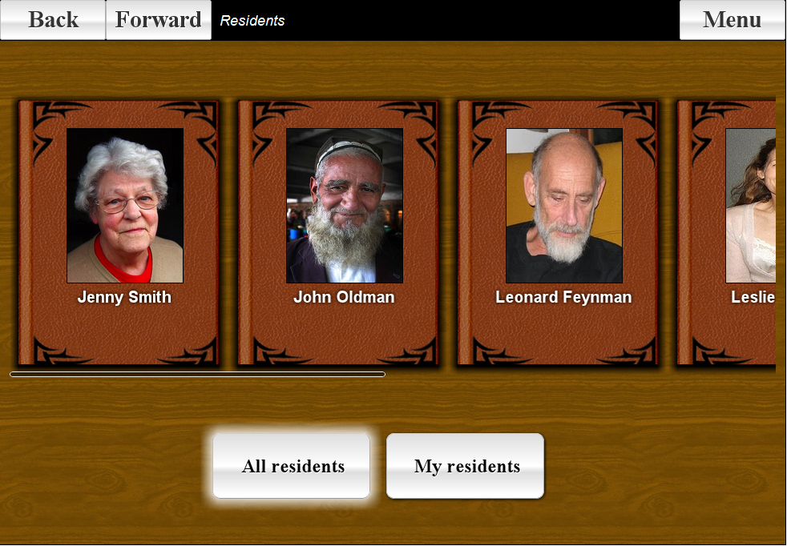
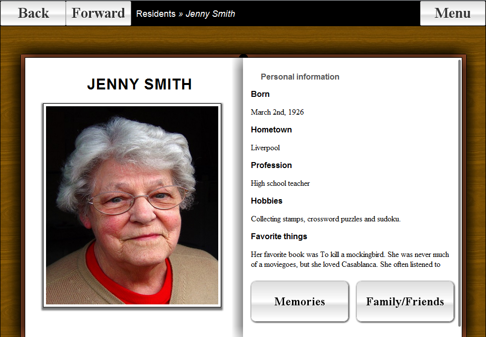
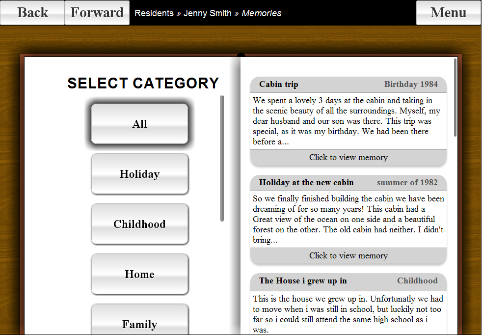
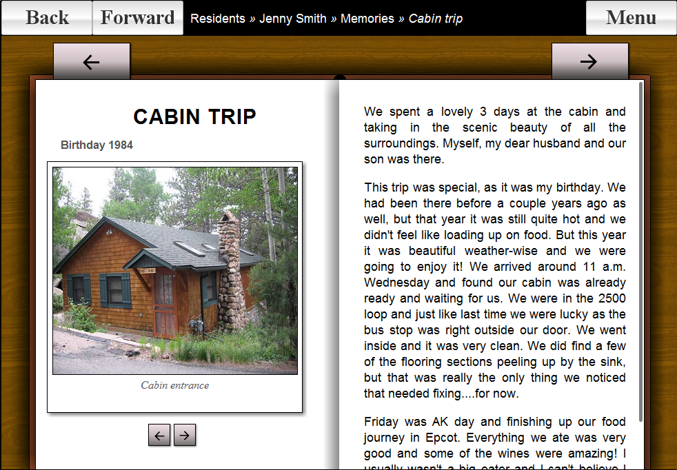
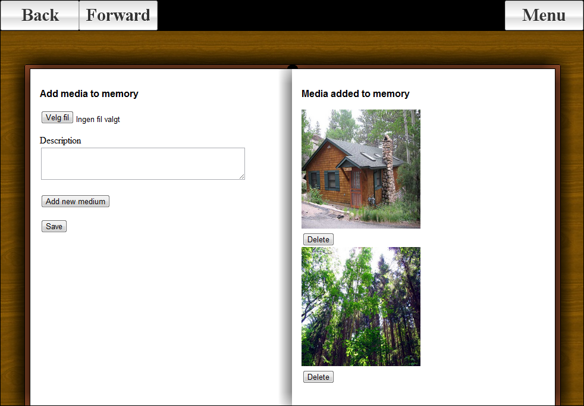
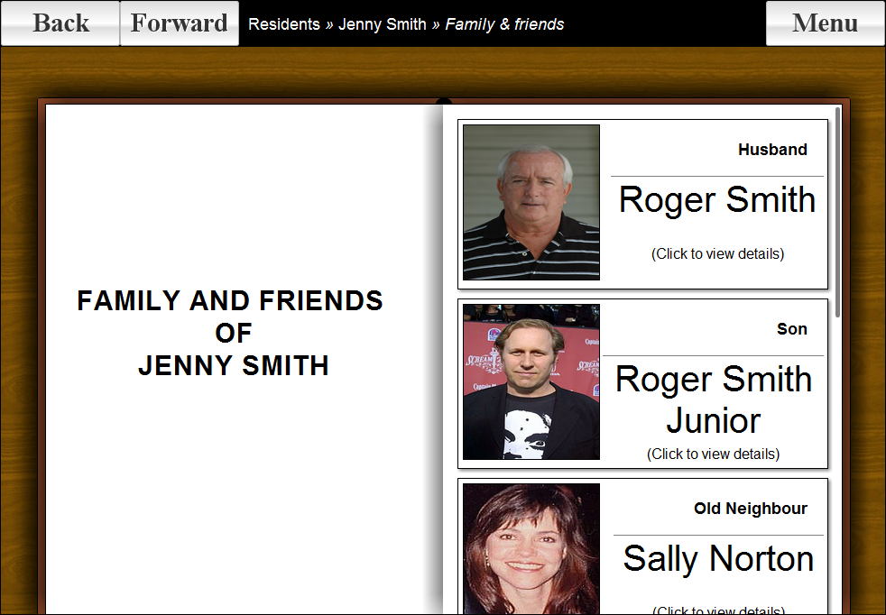
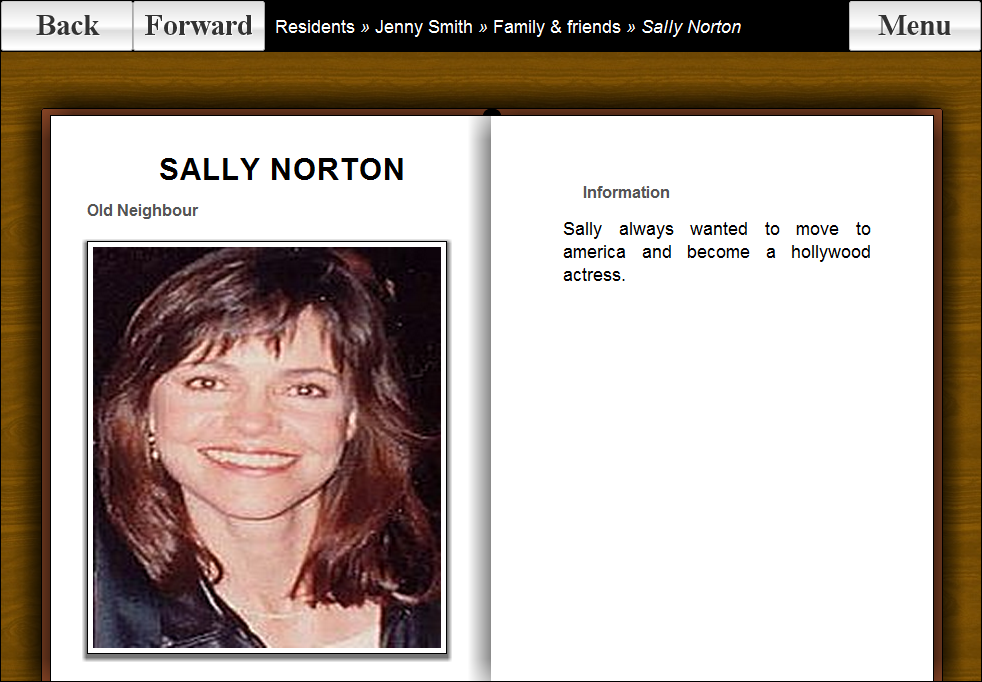

Spring 2011 I partook in a group with the assignment to create a digital book of rememberance for institutionalised patients, suffering from dementia. This book was to be mainly used by their caretakers, but featured a locked down operating mode where the patients themselves could, if their mental state allowed it, interact with the application.
The application was written in Ruby on Rails, with use of a lot of CSS to create a look that replicated a physical book. The application was to be used on a tablet, and was tailored for the Apple iPad.
This project marks the moment where I fell in love with everything HTML, CSS and JavaScript.
Unfortunately I haven't been able to clean up the code and get the server running in time, but I have included some screenshots of the application running below.
      